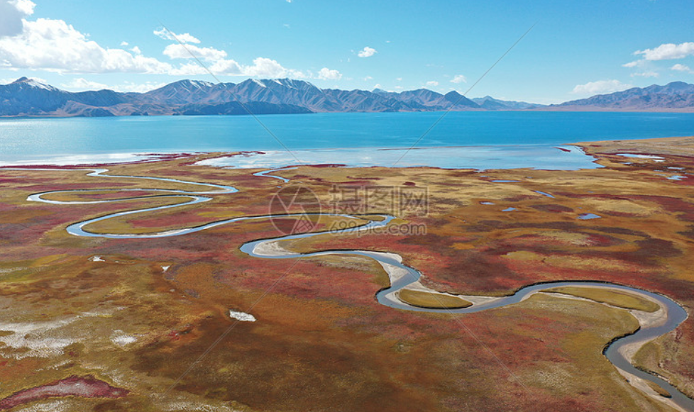
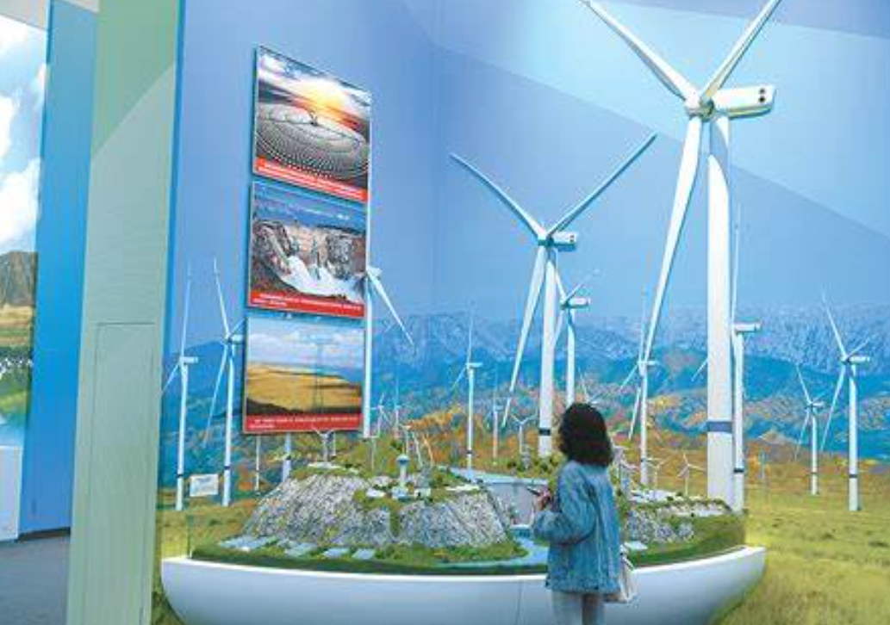
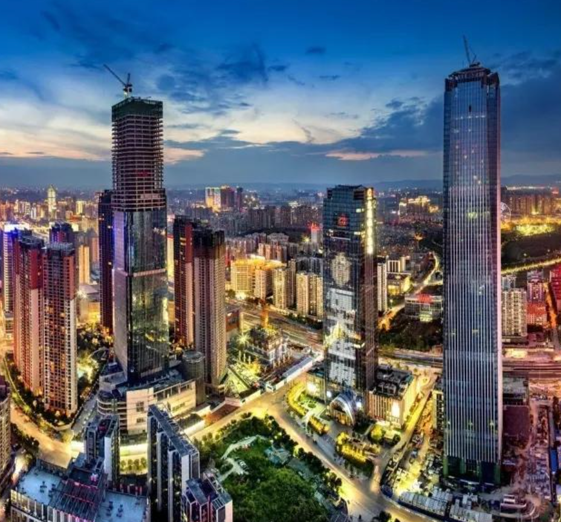
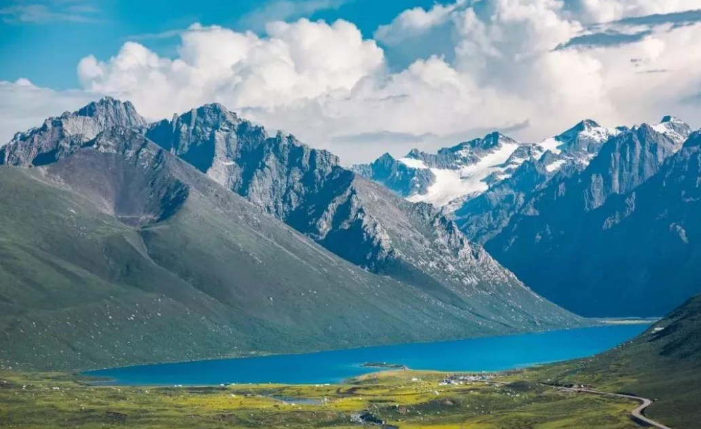
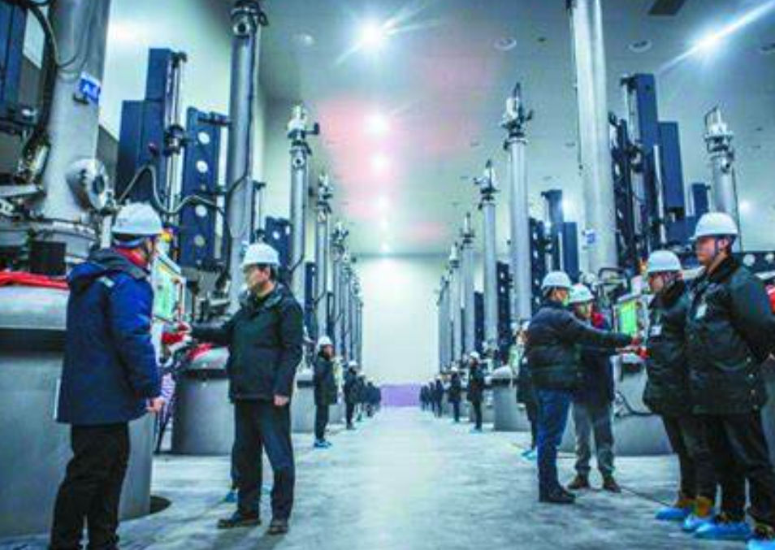
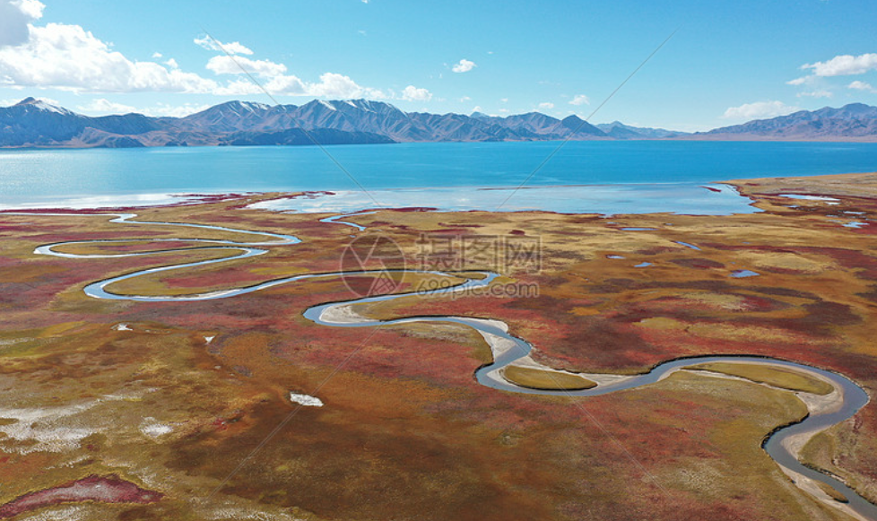
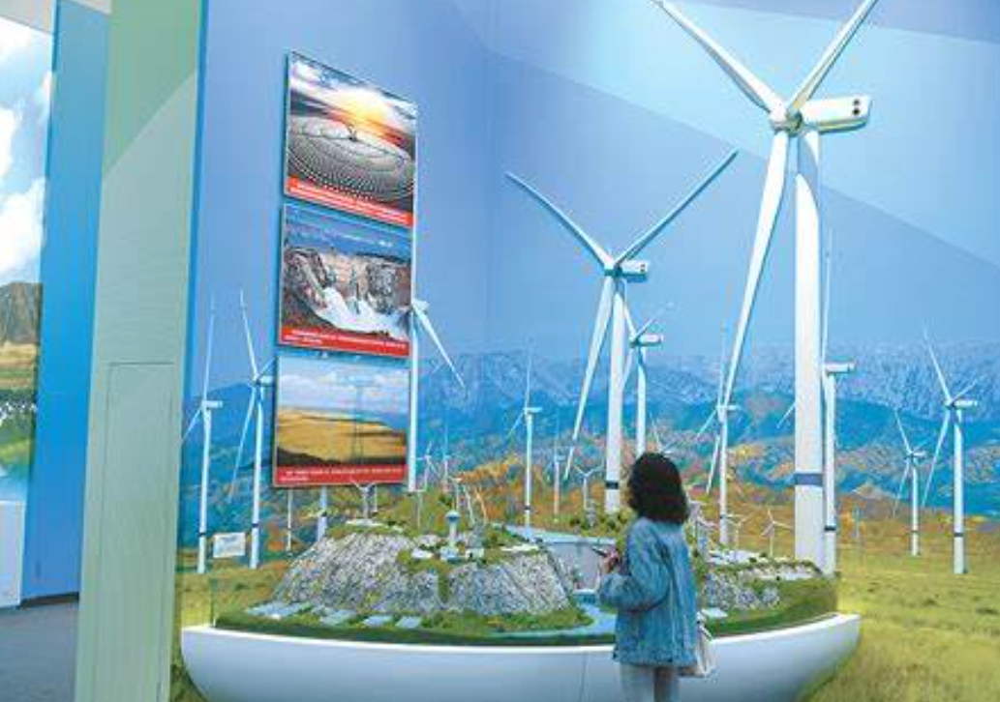
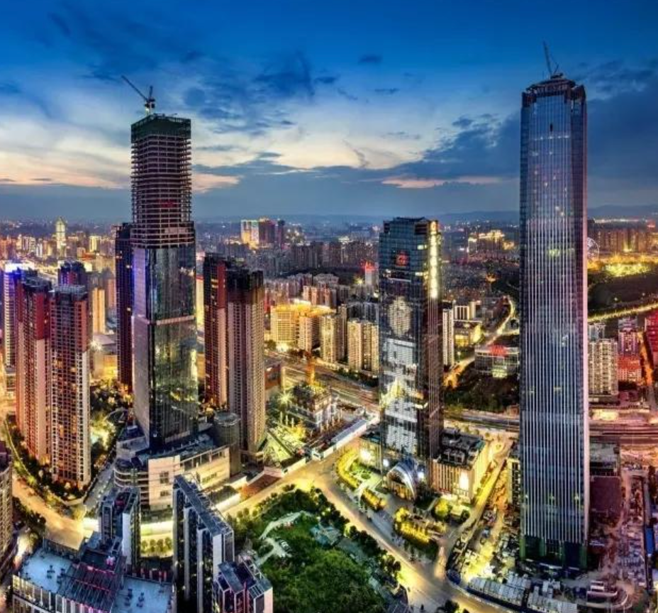
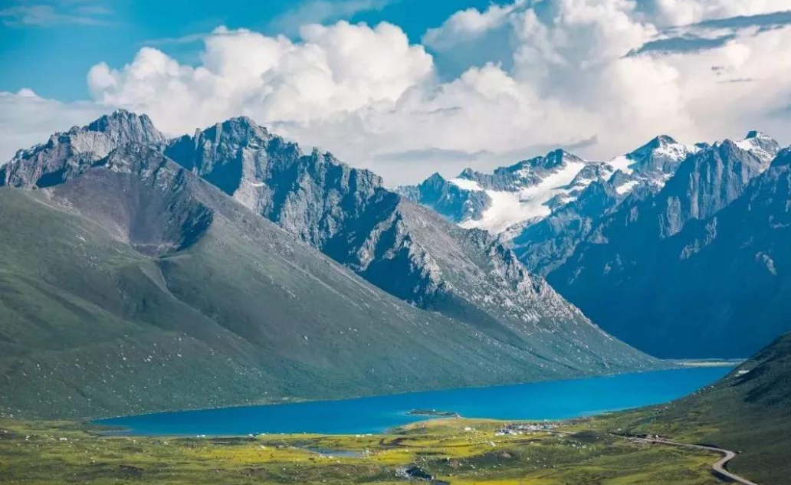
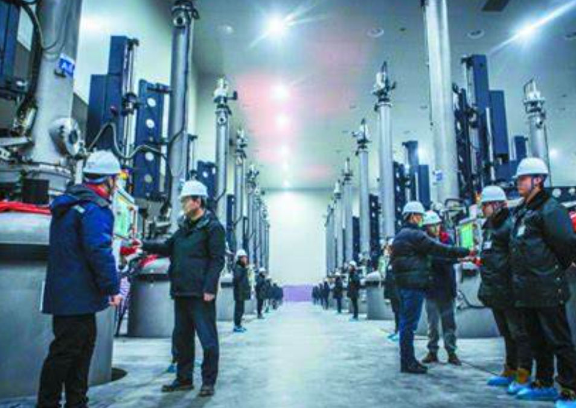

青海的未来
青海的未来发展潜力巨大，得益于其丰富的自然资源、独特的地理优势以及日益增长的经济多样性。随着国家对西部地区的战略支持，青海的经济正在朝着更加可持续和多元化的方向发展。 首先，青海的资源优势将继续为其经济发展提供动力。以新能源为代表的产业将在青海的未来经济中扮演重要角色。青海的光伏、风能等可再生能源资源丰富，未来有望成为中国乃至全球清洁能源产业的重要基地。此外，青海丰富的盐湖资源，尤其是锂、钾、镁等矿产资源，将为新能源电池产业提供重要原材料。 其次，青海将加快转型升级，推动绿色经济和生态保护并行发展。随着环保意识的提升，青海将致力于发展生态农业、生态旅游等产业，推动高原生态环境的保护与可持续利用。 在文化与旅游方面，青海的民族文化和自然景观将继续吸引越来越多的国内外游客。通过加大旅游基础设施建设、提升服务质量和开发新型旅游项目，青海有望成为西部地区的重要旅游目的地。 总的来说，青海未来将通过强化资源优势、发展新兴产业、提升文化软实力等方式，走出一条绿色、可持续的经济发展之路。
生态保护
青海省的生态保护一直是其发展的重点，尤其在近年来，青海已成为中国生态文明建设的重要示范区。青海的自然环境独特且脆弱，作为青藏高原的重要组成部分，青海是全球生态系统的重要“水塔”之一，承担着为下游地区提供水源的责任。为了保护这一宝贵的生态资源，青海采取了多项保护措施，力求实现生态与经济的协调发展。 首先，青海实施了严格的生态保护政策，设立了多个自然保护区，如青海湖、祁连山等，保护野生动植物和生态环境。同时，青海大力推进湿地保护，尤其是青海湖及其周边湿地的生态恢复工作，致力于提升生物多样性，保护水源涵养功能。 其次，青海大力发展生态农业，通过推广绿色农业技术、发展有机农产品来减少对土地和水资源的压力。此外，青海还积极推动退耕还林还草项目，通过生态修复工程来恢复退化的土地，提高生态系统的稳定性。 青海还注重发展绿色能源，如光伏、风能等可再生能源，减少传统能源的开发利用，从源头上减少环境污染，为生态保护贡献力量。随着生态文明意识的增强，青海的生态保护工作将进一步加强，力求实现经济发展与环境保护的双赢。
新能源产业
青海省的新能源产业在近年来快速发展，凭借得天独厚的地理和气候条件，青海已成为中国新能源领域的重要基地，特别是在光伏和风能产业方面具有巨大潜力。 青海的光伏产业发展迅速，由于其日照资源丰富，青海成为全球最大的光伏发电基地之一。格尔木和柴达木盆地地区的沙漠、戈壁滩以及高原地区为光伏电站的建设提供了理想的环境，光伏发电量在全国占据重要地位。青海在推进“绿色能源”战略的同时，也加大了光伏产业的技术研发和创新，进一步提升了光伏发电效率和产业竞争力。 此外，青海的风能资源也非常丰富，尤其在祁连山及其周边地区，风力资源在国内名列前茅。青海已建设多个风电场，风电装机容量持续增长。青海的风能和光伏资源优势互补，成为地方经济发展的新动力。 青海省还大力推动新能源与传统产业的融合，特别是电力传输和储能技术的发展，以便更好地将新能源的产能输送到全国其他地区。随着国家对清洁能源政策的进一步支持，青海的新能源产业将迎来更广阔的发展前景。